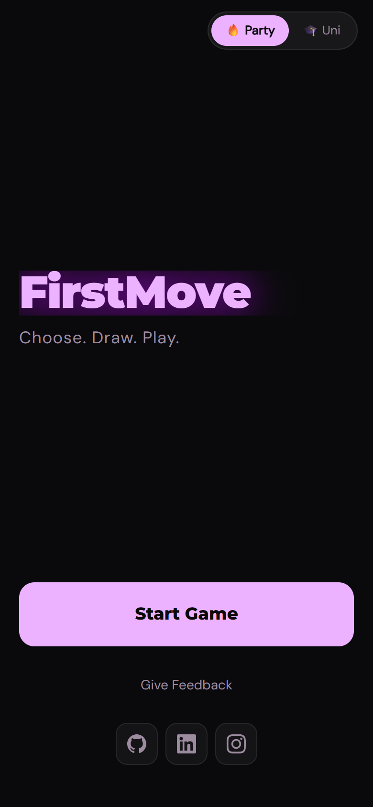
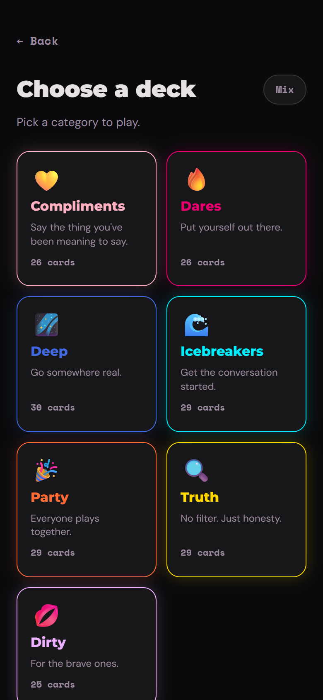
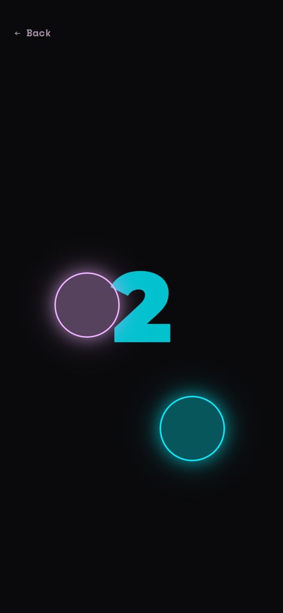

FirstMove
A mobile-first party game that replaces a physical card deck with one phone. Everyone presses a finger on the screen, the app picks who goes first, and deals a prompt: icebreakers, truths, dares, deep questions. No install, no accounts, no sign-up: one URL, passed around a table.
The finger chooser
The chooser tracks every finger on the screen as a separate touch point: each gets its own glowing ring, a countdown runs while everyone holds, and one ring is picked at random. It's built on raw touchstart/touchend tracking in a dedicated React hook, and it's the reason the game needs no dice, spinner, or arguing. Browser DevTools can't emulate multiple fingers, so this flow is tested on real phones.
Built to hold nothing
- ✗No accounts, ever: no login, no OAuth, no user profiles. Anyone at the table can grab the phone and play
- ✗No user data written: the database holds card content only and is read-only at runtime. Game state lives and dies in the browser
- ✓Only content flows: decks are authored as local JSON and seeded to Postgres by a script. The app just reads them
- ✓Only the owner is notified: server errors and security events push to a phone via ntfy.sh
F-01Multi-touch chooser hook
Touch tracking lives in one React hook that follows each finger's identifier across events: rings follow fingers, late joiners are counted, lifted fingers drop out cleanly.
F-02One deployment, two runtimes
A single Vercel project serves the static React PWA and a Python FastAPI backend as serverless functions via Mangum. No separate API host to run or pay for.
F-03Keyed & rate-limited API
Every endpoint requires an API key and is rate-limited per client; CORS is locked to the exact production domain rather than a wildcard.
F-04Cache in front of the database
Card packs are cached server-side after the first read, so a table of players hammering "new card" almost never touches Postgres, keeping a cold serverless function fast and cheap.
F-05Content as data
Decks are plain JSON files seeded to Neon by a script: writing new cards is editing text, and the two audience modes (Party / Uni) are just a field on the pack.
F-06Ops alerts to a phone
Server errors and security events (bad API keys, rate-limit trips) send push notifications through ntfy.sh: a hobby-scale pager, no dashboard babysitting.




Scan to start a game
FirstMove is built for the table. Scan the code to open it on your phone, gather your friends, and let everyone press in: it picks the first player by touch.
first-move-one.vercel.app github.com/MrTig-afk/FirstMove